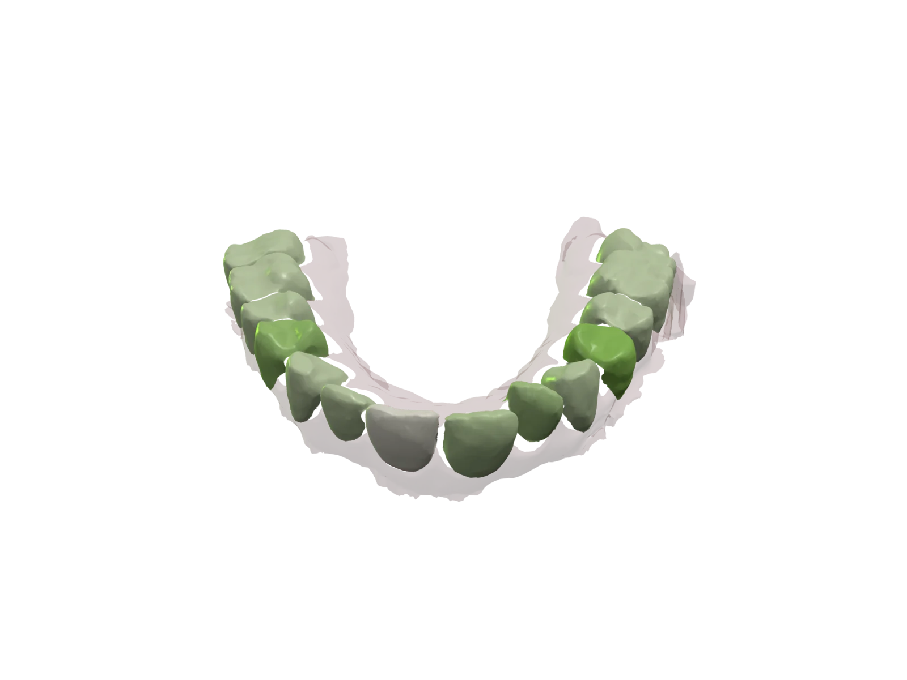
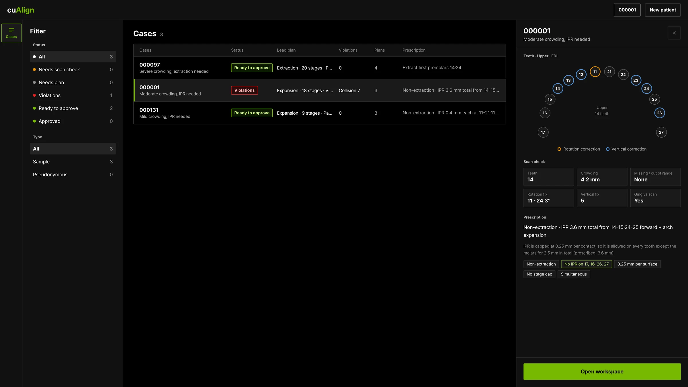
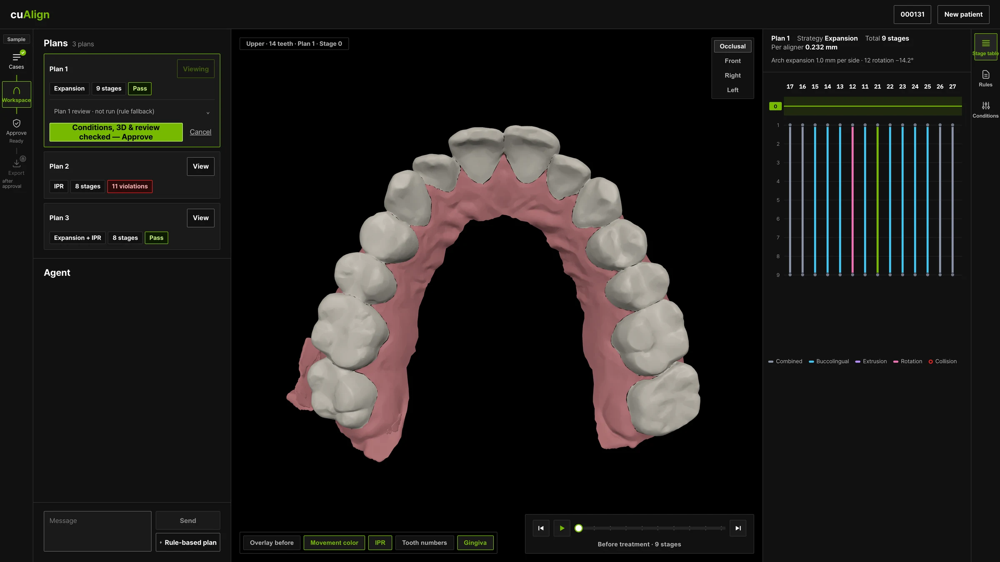
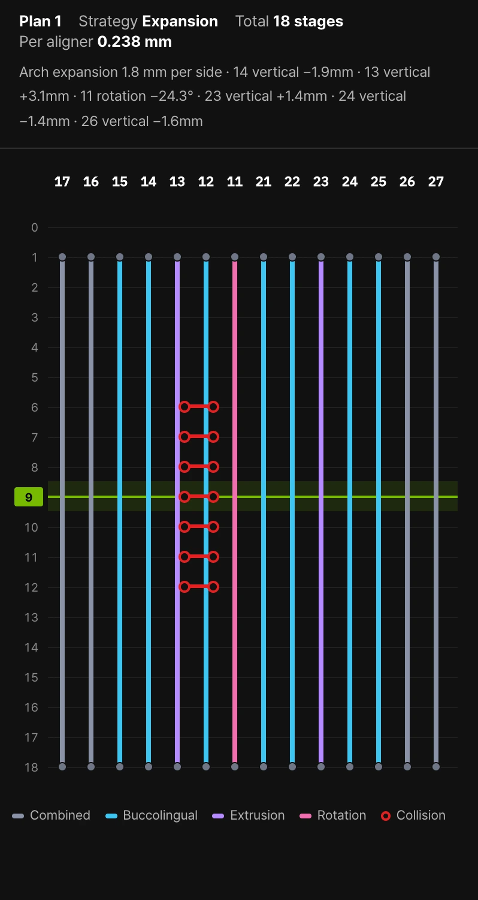
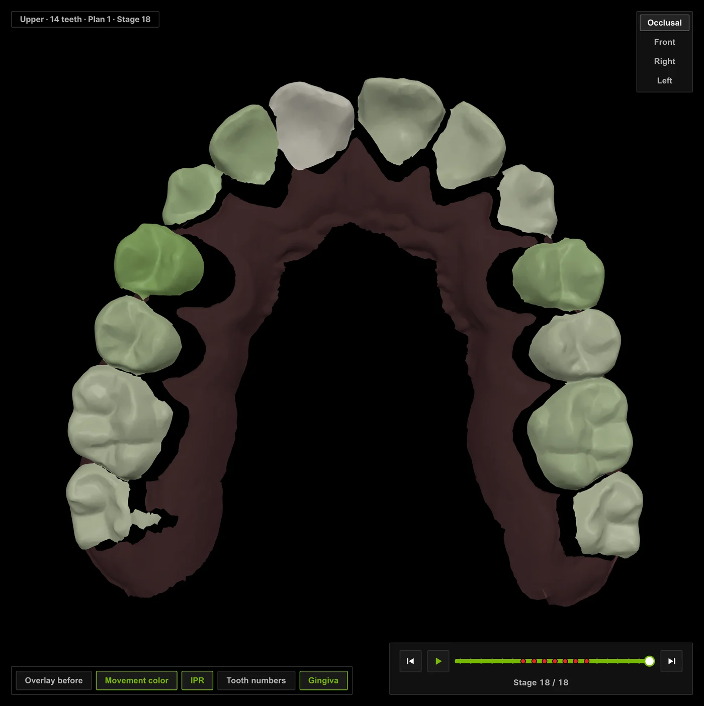
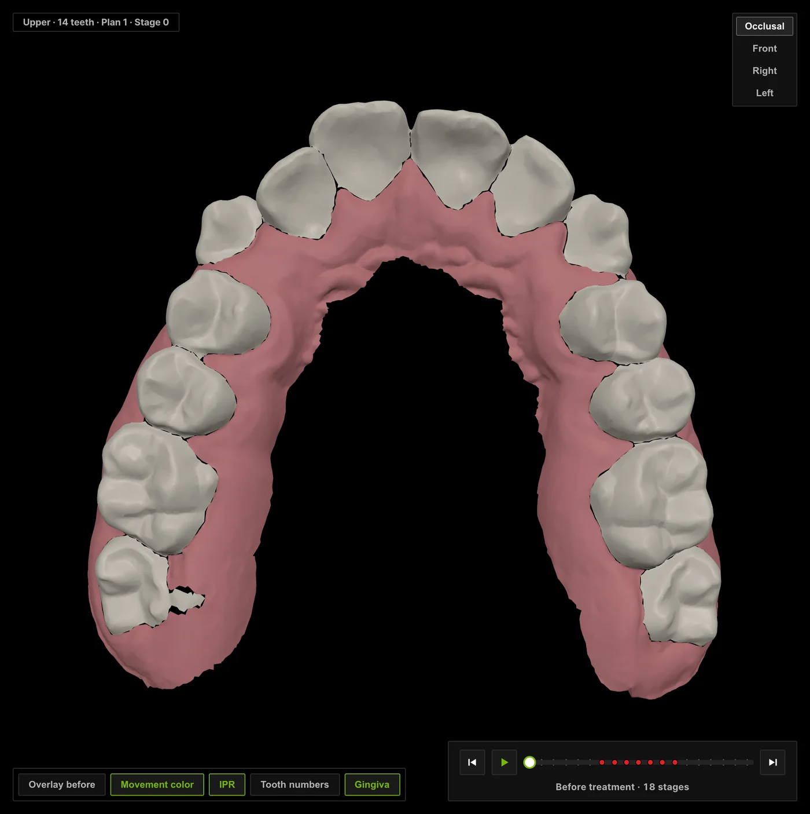
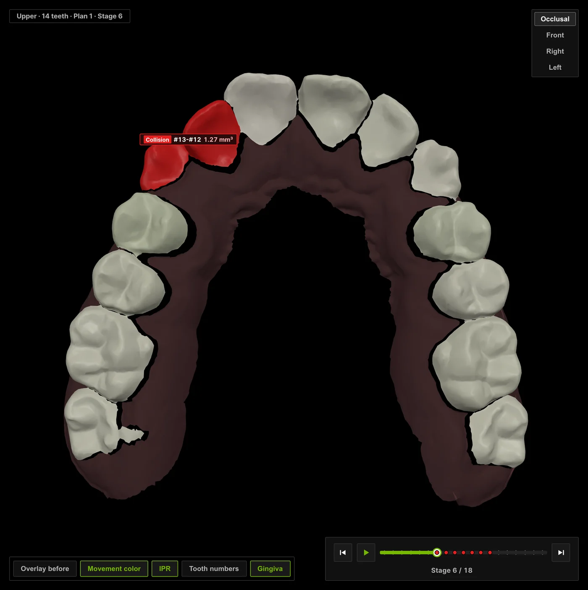
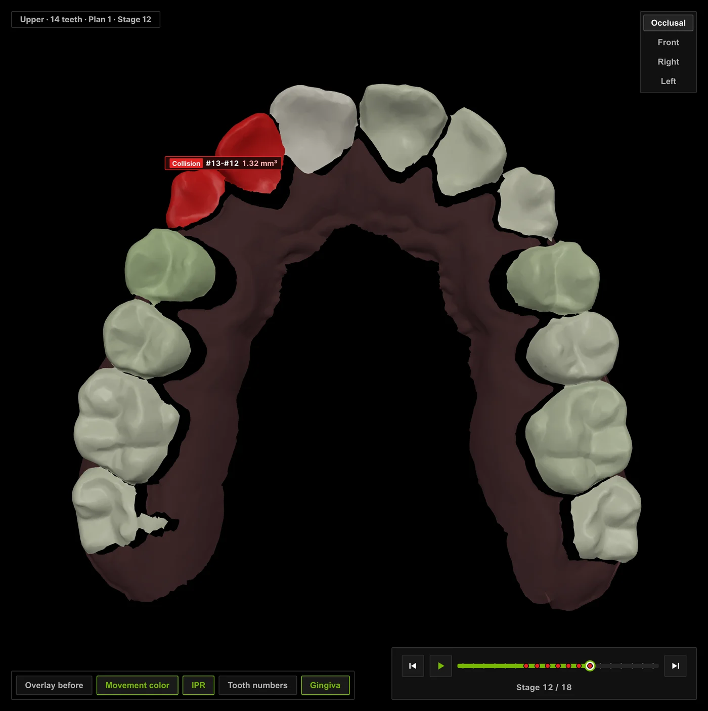

Scan
Upload per-tooth upper-arch STL files named by Universal number (1–16), with an optional gingiva.stl, or open one of three sample cases built from real upper-arch scans in the public Poseidon3D dataset.

Stage 9 / 9 · Rules: pass
NVIDIA Hackathon 2026 · Research prototype
Tell cuAlign your conditions in plain language. It plans the tooth movements, checks every stage against geometry rules, and re-plans when a rule fails. You review the result in 3D, and nothing is exported until you approve it.
Sample case poseidon-000131 from the public Poseidon3D dataset, shown with the plan cuAlign drafted for it.
Built with
Conditions, strategies, stages, rule checks and approval live in one workspace, so the dentist never loses track of which plan is on screen.

“No extraction, within twelve months, front teeth first.” The planning agent turns the request into constraints and asks back when something is missing. Asking for extraction without tooth numbers gets a question, not a guess.

Arch expansion, IPR, both, or extraction: cuAlign only computes the strategies the dentist permits. Every plan lands as a card with its stage count and rule result, and changing a condition creates a new plan instead of overwriting the old one.

One bar per tooth, coloured by movement type, spanning the stages where it moves. Collisions show up as linked rings on the exact stages they occur, and the stage bar, table and 3D view stay on the same stage.
A plan with rule violations or a failed review cannot be approved. When a plan qualifies, the dentist confirms conditions, 3D and review in one deliberate step. Edit anything afterwards and the plan needs approval again.

An approved plan exports per-tooth STL files for every stage. With a gingiva scan, the ZIP also carries a printable upper-arch model per stage. These files are for reviewing the plan; they are not wearable aligners.
Six steps from scan to files. The agent plans and re-plans; the dentist decides.
Upload per-tooth upper-arch STL files named by Universal number (1–16), with an optional gingiva.stl, or open one of three sample cases built from real upper-arch scans in the public Poseidon3D dataset.
Before any planning, the dentist confirms what was read: tooth numbers, missing teeth, widths, crowding and orientation. A mirrored numbering can be flipped in one click; unsupported scans are stopped here.
The planning agent, built on NeMo Agent Toolkit with Nemotron via NIM, reads the conditions, picks an allowed space strategy and calls the geometry core for the target arrangement and intermediate stages.
Geometry rules check space shortage, collisions, per-aligner movement and stage count. On a violation the agent tries another allowed strategy or asks the dentist. It never relaxes a condition such as “no extraction” to force a pass.
A read-only reviewer adds a note within a bounded budget. The dentist inspects each stage in 3D and approves only a plan with no violations and a completed review.
Approved plans export per-tooth STL for each stage, plus printable upper-arch models when a gingiva scan is present. Unapproved plans cannot be exported, from the UI or the CLI.
A real sample case: an upper arch with 4.2 mm of crowding, planned with arch expansion over 18 stages. Drag the slider to see what the rule checker flags along the way.
Before treatment. Fourteen upper teeth, 4.2 mm of crowding.



Each tool has one job in the running system. We mark what is on the demo path and what is still an experiment.
Hosts the planning agent, the bounded read-only reviewer, the geometry tools and the chat server that streams plan events to the UI.
Handles the conversation and tool selection. Without an API key, a rule-based fallback still plans, and the plan is marked “review not run”.
Checks input and output on every call to the agent. Requests that contain national ID, phone or email patterns are refused before they reach the model.
A clinical-rules skill is loaded into the planner's context, and a policy generated with the nemotron-policy-generator catalog skill feeds the content-safety check.
Runs the server in a sandbox that can write only to its own folders and reach only the NIM chat endpoint. Verified in one specific environment so far.
Lets an OpenClaw agent call cuAlign as an MCP server, with the approval and export tools blocked. Offline tests only.
cuAlign is a drafting tool. The design keeps the dentist in charge at every step.
Every plan is a proposal. Diagnosis, prescription and the final decision belong to the dentist.
Plans with rule violations or a failed review cannot be approved. The agent may not relax the dentist's conditions to pass.
Only an approved plan exports files. Any change creates a new plan that needs approval again.
Patients are pseudonymous, and Guardrails refuse identifier-like input. Do not upload identifiable patient data.
A hackathon prototype, stated plainly.
No. It is a research prototype built for a hackathon. It must not be used for clinical diagnosis or treatment decisions.
Python 3.12 and uv. Plans can be computed without a key; the agent conversation needs an NVIDIA API key and network access. A Docker build is also documented.
Yes, as per-tooth upper-arch STL files named by Universal number, with an optional gingiva scan. Automatic segmentation of a single-piece scan is not supported yet.
From real upper-arch scans in the public Poseidon3D dataset (Kubik & Spanel, 2024, CC BY 4.0). The prescriptions shown with them were written by a dentist after reviewing the scans.
No. It compares drafts inside the conditions the dentist allows. If no allowed strategy passes the rules, it says so instead of loosening the conditions.
Run the prototype locally, open a sample case and ask for a plan.